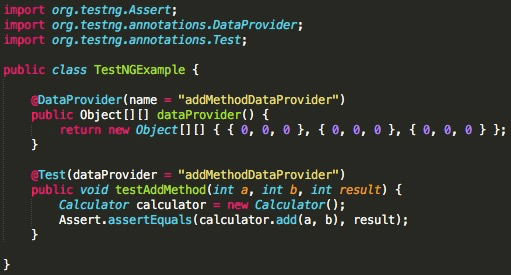
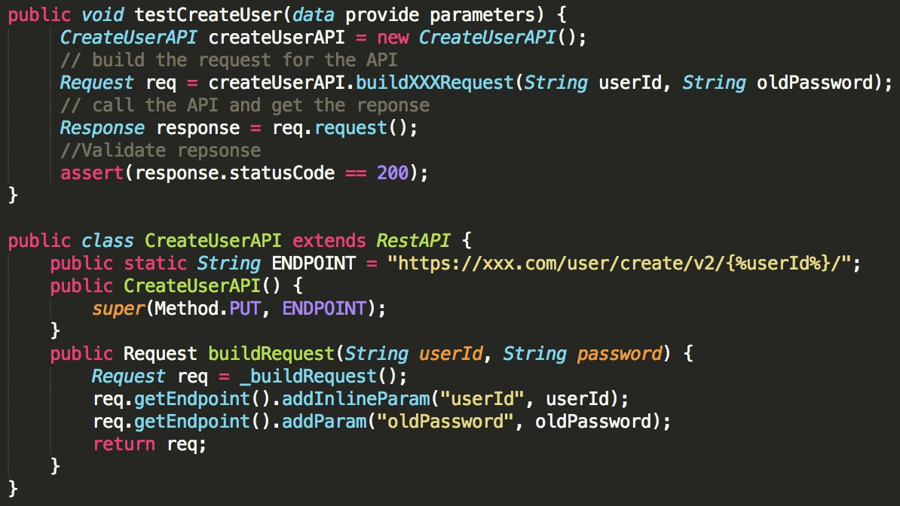

- 00 开篇词 从“小工”到“专家”，我的软件测试修炼之道.md.html
- 01 你真的懂测试吗？从“用户登录”测试谈起.md.html
- 02 如何设计一个“好的”测试用例？.md.html
- 03 什么是单元测试？如何做好单元测试？.md.html
- 04 为什么要做自动化测试？什么样的项目适合做自动化测试？.md.html
- 05 你知道软件开发各阶段都有哪些自动化测试技术吗？.md.html
- 06 你真的懂测试覆盖率吗？.md.html
- 07 如何高效填写软件缺陷报告？.md.html
- 08 以终为始，如何才能做好测试计划？.md.html
- 09 软件测试工程师的核心竞争力是什么？.md.html
- 10 软件测试工程师需要掌握的非测试知识有哪些？.md.html
- 11 互联网产品的测试策略应该如何设计？.md.html
- 12 从0到1：你的第一个GUI自动化测试.md.html
- 13 效率为王：脚本与数据的解耦 + Page Object模型.md.html
- 14 更接近业务的抽象：让自动化测试脚本更好地描述业务.md.html
- 15 过不了的坎：聊聊GUI自动化过程中的测试数据.md.html
- 16 脑洞大开：GUI测试还能这么玩（Page Code Gen + Data Gen + Headless）？.md.html
- 17 精益求精：聊聊提高GUI测试稳定性的关键技术.md.html
- 18 眼前一亮：带你玩转GUI自动化的测试报告.md.html
- 19 真实的战场：如何在大型项目中设计GUI自动化测试策略.md.html
- 20 与时俱进：浅谈移动应用测试方法与思路.md.html
- 21 移动测试神器：带你玩转Appium.md.html
- 22 从0到1：API测试怎么做？常用API测试工具简介.md.html
- 23 知其然知其所以然：聊聊API自动化测试框架的前世今生.md.html
- 24 紧跟时代步伐：微服务模式下API测试要怎么做？.md.html
- 25 不破不立：掌握代码级测试的基本理念与方法.md.html
- 26 深入浅出之静态测试方法.md.html
- 27 深入浅出之动态测试方法.md.html
- 28 带你一起解读不同视角的软件性能与性能指标.md.html
- 29 聊聊性能测试的基本方法与应用领域.md.html
- 30 工欲善其事必先利其器：后端性能测试工具原理与行业常用工具简介.md.html
- 31 工欲善其事必先利其器：前端性能测试工具原理与行业常用工具简介.md.html
- 32 无实例无真相：基于LoadRunner实现企业级服务器端性能测试的实践（上）.md.html
- 33 无实例无真相：基于LoadRunner实现企业级服务器端性能测试的实践（下）.md.html
- 34 站在巨人的肩膀：企业级实际性能测试案例与经验分享.md.html
- 35 如何准备测试数据？.md.html
- 36 浅谈测试数据的痛点.md.html
- 37 测试数据的“银弹”- 统一测试数据平台（上）.md.html
- 38 测试数据的“银弹”- 统一测试数据平台（下）.md.html
- 39 从小作坊到工厂：什么是Selenium Grid？如何搭建Selenium Grid？.md.html
- 40 从小工到专家：聊聊测试执行环境的架构设计（上）.md.html
- 41 从小工到专家：聊聊测试执行环境的架构设计（下）.md.html
- 42 实战：大型全球化电商的测试基础架构设计.md.html
- 43 发挥人的潜能：探索式测试.md.html
- 44 测试先行：测试驱动开发(TDD).md.html
- 45 打蛇打七寸：精准测试.md.html
- 46 安全第一：渗透测试.md.html
- 47 用机器设计测试用例：基于模型的测试.md.html
- 48 优秀的测试工程师为什么要懂大型网站的架构设计？.md.html
- 49 深入浅出网站高性能架构设计.md.html
- 50 深入浅出网站高可用架构设计.md.html
- 51 深入浅出网站伸缩性架构设计.md.html
- 52 深入浅出网站可扩展性架构设计.md.html
- 测试专栏特别放送 浅谈全链路压测.md.html
- 测试专栏特别放送 答疑解惑第一期.md.html
- 测试专栏特别放送 答疑解惑第七期.md.html
- 测试专栏特别放送 答疑解惑第三期.md.html
- 测试专栏特别放送 答疑解惑第二期.md.html
- 测试专栏特别放送 答疑解惑第五期.md.html
- 测试专栏特别放送 答疑解惑第六期.md.html
- 测试专栏特别放送 答疑解惑第四期.md.html
- 结束语 不是结束，而是开始.md.html
- 捐赠
05 你知道软件开发各阶段都有哪些自动化测试技术吗？
在前面的文章中，我介绍了为什么要做自动化测试，以及什么样的项目适合做自动化测试，那么现在我来说说软件开发生命周期的各个阶段都有哪些类型的自动化测试技术。
说到自动化测试，你可能最为熟悉的就是GUI自动化测试了。比如，早年的C/S架构，通常就是用自动化测试脚本打开被测应用，然后在界面上以自动化的方式执行一系列的操作；再比如，现今的Web站点测试，也是用自动化测试脚本打开浏览器，然后输入要访问的网址，之后用自动化脚本识别定位页面元素，并进行相应的操作。
因此，说到自动化测试时，你的第一反应很可能就是GUI自动化测试。然而，在软件研发生命周期的各个阶段都有自动化测试技术的存在，并且对提升测试效率有着至关重要的作用。
今天这篇文章，我将会以不同的软件开发阶段涉及的自动化测试技术为主线，带你了解单元测试、代码级集成测试、Web Service测试和GUI测试阶段的自动化技术，希望可以帮助你更深入地理解“自动化测试”的内涵以及外延。
单元测试的自动化技术
首先，你可能认为单元测试本身就是自动化的，因为它根据软件详细设计采用等价类划分和边界值分析方法设计测试用例，在测试代码实现后再以自动化的方式统一执行。
这个观点非常正确，但这仅仅是一部分，并没有完整地描述单元测试“自动化”的内涵。从广义上讲，单元测试阶段的“自动化”内涵不仅仅指测试用例执行的自动化，还应该包含以下五个方面：
- 用例框架代码生成的自动化；
- 部分测试输入数据的自动化生成；
- 自动桩代码的生成；
- 被测代码的自动化静态分析；
- 测试覆盖率的自动统计与分析。
你可能感觉这些内容有些陌生，不过没关系，下面我就详细地跟你说说每一条的具体含义。
第一，用例框架代码生成的自动化
有些框架代码应该由自动化工具生成，而不是由开发者手工完成。这样一来，单元测试开发者可以把更多的精力放在测试逻辑的覆盖和测试数据的选择上，从而大幅提高单元测试用例的质量和开发效率。
- TestNG框架代码应该由自动化工具生成
第二，部分测试输入数据的自动化生成
这部分是指，自动化工具能够根据不同变量类型自动生成测试输入数据。自动化工具本身不可能明白代码逻辑，你可能很难理解它是如何根据需要测试的代码逻辑生成合适的输入数据，并且去判断预计的测试结果的。那我给你举个例子，你就很容易明白了。
比如，某个被测函数的原型是void fun（int* p, short b），那么测试数据自动生成技术就会为输入参数int* p自动生成“空”和“非空”的两个指针p，然后分别执行函数void fun（int* p, short b），并观察函数的执行情况。
如果函数内部没有对空指针进行特殊处理，那么函数fun的调用必定会抛出异常，从而发现函数的设计缺陷。同样地，对于输入参数short b会自动生成超出short范围的b，测试函数fun的行为。
第三，自动桩代码的生成
简单地说，桩代码（stub code）是用来代替真实代码的临时代码。 比如，某个函数A的内部实现中调用了一个尚未实现的函数B，为了对函数A的逻辑进行测试，那么就需要模拟一个函数B，这个模拟的函数B实现就是所谓的桩代码。
自动桩代码的生成是指自动化工具可以对被测试代码进行扫描分析，自动为被测函数内部调用的其他函数生成可编程的桩代码，并提供基于测试用例的桩代码管理机制。此时，单元测试开发者只需重点关注桩代码内的具体逻辑实现，以及桩代码的返回值。
必要的时候，自动化工具还需要实现 “抽桩”，以适应后续的代码级集成测试的需求。
那什么是“抽桩”呢？其实也很简单，在单元测试阶段，假如函数A内部调用的函数B是桩代码，那么在代码级集成测试阶段，我们希望函数A不再调用假的函数B，而是调用真实的函数B，这个用真实函数B代替原本桩代码函数B的操作，就称为“抽桩”。
第四，被测代码的自动化静态分析
静态分析主要指代码的静态扫描，目的是识别出违反编码规则或编码风格的代码行。通常这部分工作是结合项目具体的编码规则和编码风格，由自动化工具通过内建规则和用户自定义规则自动化完成的。目前比较常用的代码静态分析工具有Sonar和Coverity等。
严格意义上讲，静态分析不属于单元测试的范畴，但这部分工作一般是在单元测试阶段通过自动化工具完成的，所以我也把它归入到了单元测试自动化的范畴。
第五，测试覆盖率的自动统计与分析
单元测试用例执行结束后，自动化工具可以自动统计各种测试覆盖率，包括代码行覆盖率、分支覆盖率、MC/DC覆盖率等。这些自动统计的指标，可以帮你衡量单元测试用例集合的充分性和完备性，并可以为你提供适当增补测试用例以提高测试覆盖率的依据。
代码级集成测试的自动化技术
通俗地讲，代码级集成测试是指将已经开发完成的软件模块放在一起测试。
从测试用例设计和测试代码结构来看，代码级集成测试和单元测试非常相似，它们都是对被测试函数以不同的输入参数组合进行调用并验证结果，只不过代码级集成测试的关注点，更多的是软件模块之间的接口调用和数据传递。
代码级集成测试与单元测试最大的区别只是，代码级集成测试中被测函数内部调用的其他函数必须是真实的，不允许使用桩代码代替，而单元测试中允许使用桩代码来模拟内部调用的其他函数。
以上的这些异同点就决定了代码级集成测试“自动化”的内涵与单元测试非常相似，尤其是在实际操作层面，比如测试用例的设计方法、测试用例的代码结构以及数据驱动思想的应用等等。
但是，代码级集成测试对测试框架的要求非常高，这个框架除了可以顺利装载自己的软件模块外，还必须能装载其他相互依赖的模块，做到被测软件模块可运行（Runnable）。
由于代码级集成测试主要应用在早期非互联网的传统软件企业，那时候的软件以“单体”应用居多，一个软件内部包含大量的功能，每一个软件功能都是通过不同的内部模块来实现的，那么这些内部模块在做集成的时候，就需要做代码级集成测试。
现在的开发理念追求的是系统复杂性的解耦，会去尽量避免“大单体”应用，采用Web Service或者RPC调用的方式来协作完成各个软件功能。所以现在的软件企业，尤其是互联网企业，基本不会去做代码级集成测试，我在这里也就不再进一步展开了。
Web Service测试的自动化技术
Web Service测试，主要是指SOAP API和REST API这两类API测试，最典型的是采用SoapUI或Postman等类似的工具。但这类测试工具基本都是界面操作手动发起Request并验证Response，所以难以和CI/CD集成，于是就出现了API自动化测试框架。
如果采用API自动化测试框架来开发测试用例，那么这些测试用例的表现形式就是代码。为了让你更直观地理解基于代码的API测试用例是什么样子的，我给你举一个“创建用户”API的例子，你只需要看代码的大致步骤就可以了，具体到每行代码的含义，我会在后续文章中详细讲解。
- 基于API自动化测试框架的测试用例示例（测试CreateUser API）
对于基于代码的API测试用例，通常包含三大步骤：
- 准备API调用时需要的测试数据；
- 准备API的调用参数并发起API的调用；
- 验证API调用的返回结果。
目前最流行的API自动测试框架是REST Assured，它可以方便地发起Restful API调用并验证返回结果。
同样地，Web Service测试“自动化”的内涵不仅仅包括API测试用例执行的自动化，还包括以下四个方面：
- 测试脚手架代码的自动化生成；
- 部分测试输入数据的自动生成；
- Response验证的自动化；
- 基于SoapUI或者Postman的自动化脚本生成。
接下来，我会依次为你解释这4个方面代表什么含义。
第一，测试脚手架代码的自动化生成- 和单元测试阶段的用例框架代码自动生成一个道理，你在开发API测试的过程中更关心的是，如何设计测试用例的输入参数以及组合，以及在不同参数组合情况下Response的验证，而你不希望将精力浪费在代码层面如何组织测试用例、测试数据驱动如何实现等非测试业务上。
这时，测试脚手架代码的自动生成技术就派上用场了。它生成的测试脚手架代码，通常包含了被测试API的调用、测试数据与脚本的分离，以及Response验证的空实现。
第二，部分测试输入数据的自动生成
这一点和单元测试的测试输入数据的自动化生成也很类似，唯一不同的是，单元测试针对的参数是函数输入参数和函数内部输入，而API测试对应的是API的参数以及API调用的Payload。数据生成的原则同样遵循边界值原则。
第三，Response验证的自动化
对于API调用返回结果的验证，通常关注的点是返回状态码（status code）、Scheme结构以及具体的字段值。如果你写过这种类型的测试用例，那你就会知道字段值的验证相当麻烦，只有那些你明确写了assert的字段才会被验证，但是通常你不可能针对所有的字段都写assert，这时就需要Response验证的自动化技术了。
Response验证自动化的核心思想是自动比较两次相同API调用的返回结果，并自动识别出有差异的字段值，比较过程可以通过规则配置去掉诸如时间戳、会话ID（Session ID）等动态值。 这部分内容，我会在后续文章中详细讲解。
第四，基于SoapUI或者Postman的自动化脚本生成
你在使用SoapUI或者Postman等工具进行Web Service测试时，已经在这些工具里面积累了很多测试用例。那么，在引入了基于代码实现的API测试框架之后，就意味着需要把这些测试用例都用代码的方式重写一遍，而这额外的工作量是很难被接受的。
我的建议是，开发一个自动化代码转换生成工具。这个工具的输入是SoapUI或者Postman的测试用例元数据（即测试用例的JSON元文件），输出是符合API测试框架规范的基于代码实现的测试用例。这样一来，原本的测试用例积累可以直接转换成在CI/CD上可以直接接入的自动化测试用例。
对于新的测试用例，还可以继续用SoapUI或者Postman做初步的测试验证，初步验证没有问题后，直接转换成符合API测试框架规范的测试用例。对于复杂的测试用例，也可以直接基于代码来实现，而且灵活性会更好。
GUI测试的自动化技术
GUI测试的自动化技术可能是你最熟悉的，也是发展时间最长、应用最广的自动化测试技术。它的核心思想是，基于页面元素识别技术，对页面元素进行自动化操作，以模拟实际终端用户的行为并验证软件功能的正确性。
目前，GUI自动化测试主要分为两大方向，传统Web浏览器和移动端原生应用（Native App）的GUI自动化。虽然二者采用的具体技术差别很大，但是用例设计的思路类似。
- 对于传统Web浏览器的GUI自动化测试，业内主流的开源方案采用Selenium，商业方案采用Micro Focus的UFT（前身是HP的QTP）；
- 对于移动端原生应用，通常采用主流的Appium，它对iOS环境集成了XCUITest，对Android环境集成了UIAutomator和Espresso。
这部分内容，我会在后续的文章中详细展开。
总结
我给你梳理了软件研发生命周期各个阶段的自动化测试技术，包括单元测试、代码级集成测试、Web Service测试和GUI测试的自动化技术，并给你归纳了每一类技术的核心方法和应用场景。
我希望你通过这篇文章，可以先对自动化测试的全局有一个比较清晰的认识，然后在后续的文章中我还会针对这些技术展开讨论，并给你分享一些相应的实际案例。
思考题
你现在所在的公司，是否实行代码级测试，用到了哪些自动化测试技术？
欢迎你给我留言。
© 2019 - 2023 Liangliang Lee. Powered by gin and hexo-theme-book.